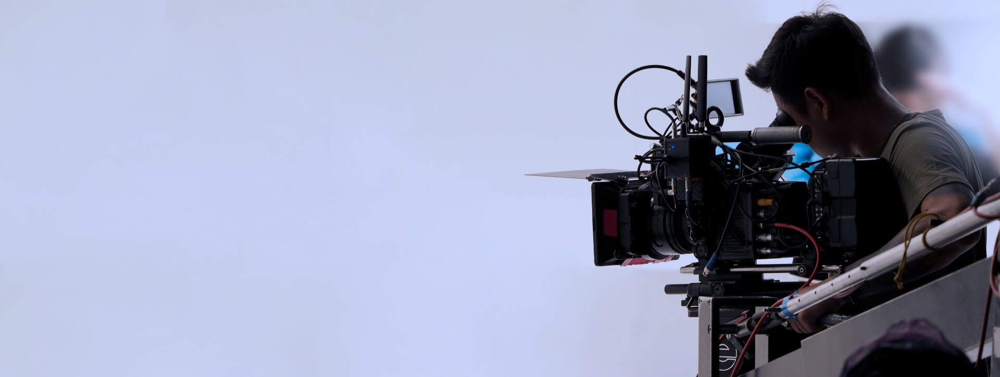
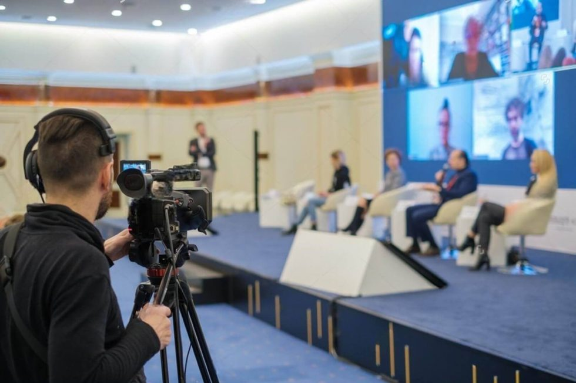

01 / 03
01 / 03Video · 3 disciplines
Video production
We plan and produce video for businesses, artists, and event organizers — from the initial creative direction through filming, editing, and final delivery.
Explore service ↗
Video, sound, and live events — brought together by a team that coordinates the idea, the technical plan, and the audience experience from first brief to delivery.
Reson8 Productions is an Athens-based production company. We handle creative and technical needs for video, music, live events, and online broadcasts — with a clear plan, attention to detail, and steady communication.
Bring us in for one focused service or combine disciplines into a coordinated production.
01 / 03We plan and produce video for businesses, artists, and event organizers — from the initial creative direction through filming, editing, and final delivery.
Explore service ↗ 02 / 03
02 / 03From the sound of a live stage to recording and music production, we shape audio that feels clear and supports the experience.
Explore service ↗
03 / 03We support book presentations, conferences, seminars, and webinars with technical planning, live streaming, and content that continues to work after the event.
Explore service ↗ STUDIO / STAGE
STUDIO / STAGEFor vidcasts, live studio sessions, and set-based shoots, we plan space and technical requirements around the production. Venue availability and specifications are confirmed before scheduling.
Explore studio & soundstage ↗We align on the goal, audience, creative direction, and practical requirements.
We organize the crew, space, equipment, and schedule around the brief.
We coordinate production and stay close to the details through final delivery.
Tell us what you want to make, when, and for whom. We’ll get back to you and shape the right next steps together.
Discuss a project ↗